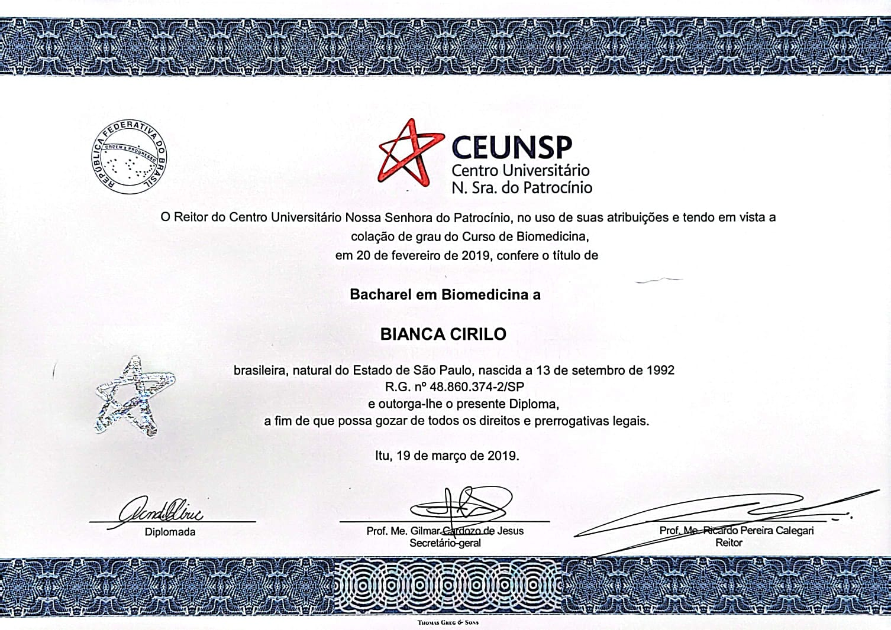
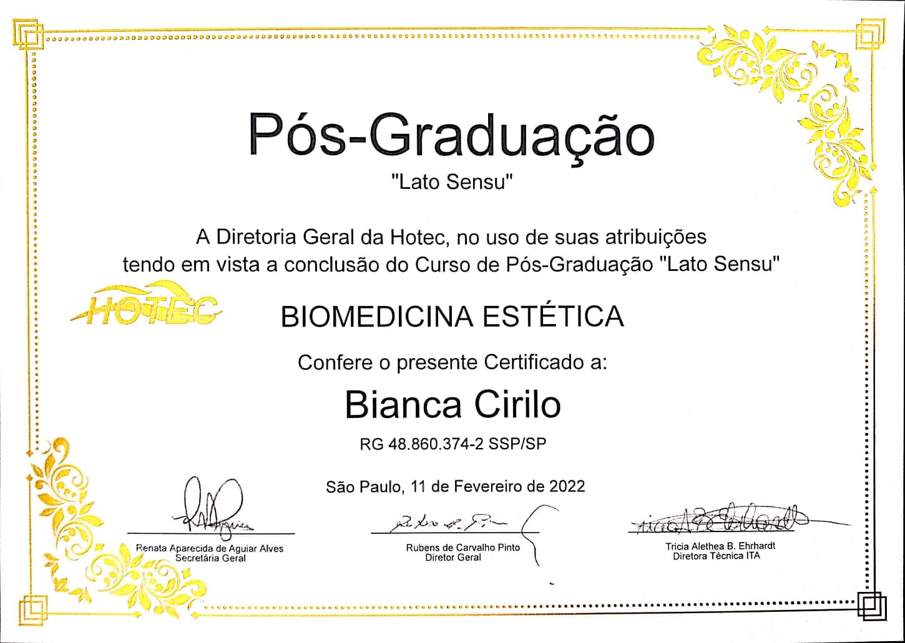
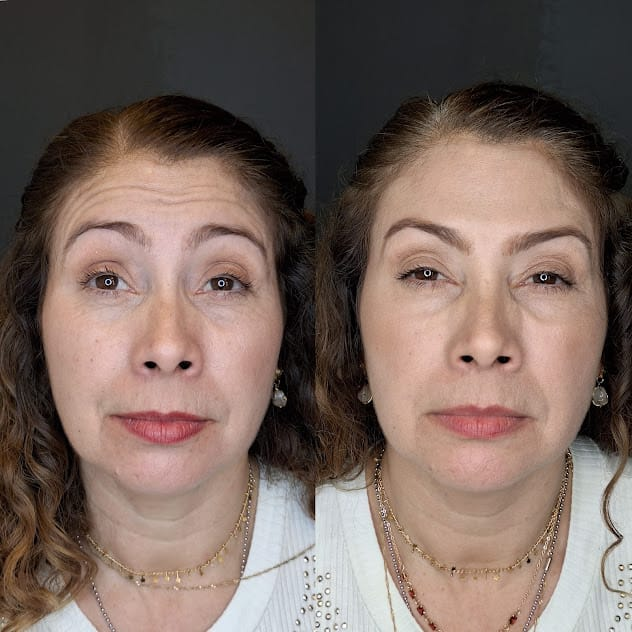
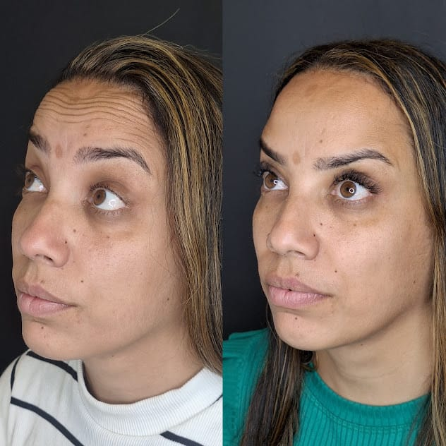
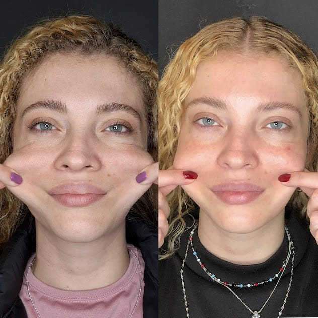
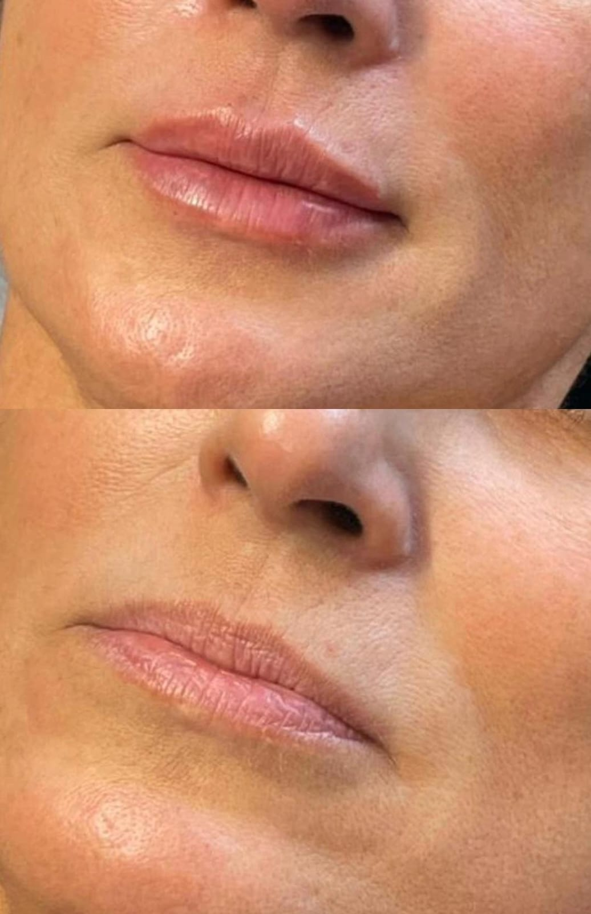

Formação Acadêmica
Graduação: Biomedicina - CEUNSP (Concluído em 2018)
Pós-Graduação: Biomedicina Estética - ITA (Concluído em 2021)
Tecnologia: Análise e Desenvolvimento de Sistemas - UniSENAI (Em andamento)
Sobre Mim
Especialista em Rejuvenescimento e Harmonização Facial Injetável: Com sólida trajetória na biomedicina estética avançada, atuo como responsável técnica e injetora, unindo ciência e arte na aplicação de tecnologias e laser. Meu compromisso reside na busca incessante pela perfeição técnica, mantendo-me na vanguarda das novas tecnologias e protocolos internacionais. Além da prática clínica, dedico-me ao desenvolvimento de padrões de excelência, conduzindo treinamentos e monitorias que garantem a segurança e a alta performance de toda a equipe.
Certificações e Cursos

Bacharel em Biomedicina

Pós-Graduação em Biomedicina Estética
Experiência Profissional
Saúde Estética Avançada: Especialista em injetáveis e harmonização facial.
Desenvolvimento Web: Criação de soluções digitais para o setor da saúde.
Resultados Clínicos

Toxina Botulínica
Descrição xxx.

Toxina Botulínica
Descrição xxx.

Bioestimulador de Colágeno
Tratamento de flacidez com foco em colágeno.

Preenchimento Labial
Melhora de volume, contorno e hidratação com ácido hialurônico.